684 Rezepte aus zehn Jahren Montagskochen.
Von 2003 bis 2013 haben Beni und Gäbi in Basel jeden Montag gekocht und alles aufgeschrieben, 476 Gerichte auch fotografiert. Hier ist die ganze Sammlung, nach Rezept statt nach Datum.
684 Rezepte
 Älpler MagronenPasta & Risotto
Älpler MagronenPasta & Risotto- ÄÄpfel mit PreiselbeerenDessert
 Agnolotti al plinPasta & Risotto
Agnolotti al plinPasta & Risotto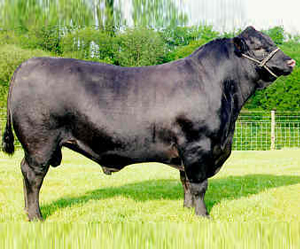
Angus RindsfiletFleisch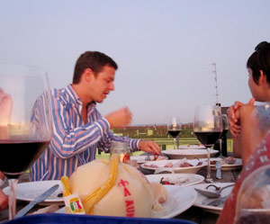
AntipastiGemüse & Beilagen Apero-BlätterteigkrapfenBrot & Pizza
Apero-BlätterteigkrapfenBrot & Pizza- AApfelkrenDessert
 Apple crumbleDessert
Apple crumbleDessert AprikosenwäheDessert
AprikosenwäheDessert Arme Aesse (Bratensauce mit Bratwurst und Gemüse)Fleisch
Arme Aesse (Bratensauce mit Bratwurst und Gemüse)Fleisch Artischocken mit Bucatini (dicke Spaghetti)Pasta & Risotto
Artischocken mit Bucatini (dicke Spaghetti)Pasta & Risotto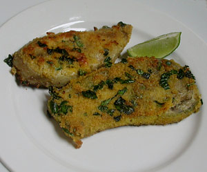
AuberginenplätzliGemüse & Beilagen AuberginenschnitzelFleisch
AuberginenschnitzelFleisch Ausgebackener Ziegenkäse mit HonigGemüse & Beilagen
Ausgebackener Ziegenkäse mit HonigGemüse & Beilagen Avocado an VinaigretteSauce & Dip
Avocado an VinaigretteSauce & Dip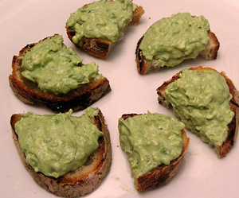
Avocado-Gorgonzola-MousseDiverses- BBaba GhanoushSauce & Dip
- BBabaganoushGemüse & Beilagen
- BBadischer SpargelGemüse & Beilagen
- BBadischer SpargelGemüse & Beilagen
- BBadischer SpargelGemüse & Beilagen
- BBadischer SpargelGemüse & Beilagen
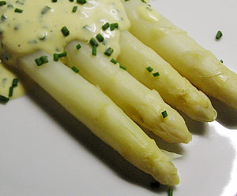
Badischer SpargelGemüse & Beilagen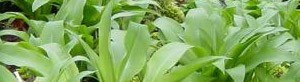
Bärlauchpesto (von münchenstein)Sauce & Dip Baked Apple PancakeDessert
Baked Apple PancakeDessert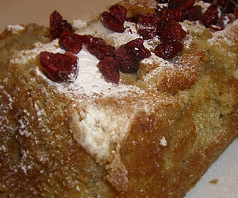
BananacakeDiverses Bandnudeln mit Safran/Zucchini-SaucePasta & Risotto
Bandnudeln mit Safran/Zucchini-SaucePasta & Risotto Barbarie Entenbrust auf Grapefruit-FenchelsalatSalat
Barbarie Entenbrust auf Grapefruit-FenchelsalatSalat- BBasilikummousseDessert
 Bauernwurst, Zwiebelsauce und BratkartoffelnFleisch
Bauernwurst, Zwiebelsauce und BratkartoffelnFleisch- BBaumnuss Crème fraiche SauceSauce & Dip
- BBQFleisch
 Belegte BrötchenBrot & Pizza
Belegte BrötchenBrot & Pizza Beluga Linsen mit jungem Lauch nach Rhyschänzli-ArtGemüse & Beilagen
Beluga Linsen mit jungem Lauch nach Rhyschänzli-ArtGemüse & Beilagen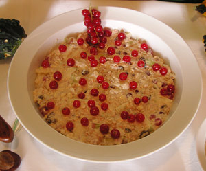
BirchermüsliDessert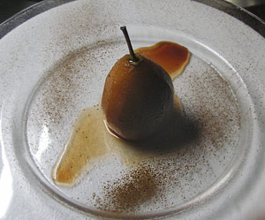
Birne im RotweinDessert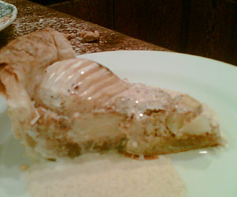
Birnen-TorteDessert BirnensorbetDessert
BirnensorbetDessert BiscottiDessert
BiscottiDessert Bistecca und Gemüse auf dem GrillFleisch
Bistecca und Gemüse auf dem GrillFleisch- BBlumenkohlGemüse & Beilagen
- BBlumenkohlGemüse & Beilagen
- BBlumenkohl/Broccoli-Strudel an Koreanderyoghurt-Sauce und wintersalatSalat
 Boeuf BourgignonneFleisch
Boeuf BourgignonneFleisch- BBohnenGemüse & Beilagen
 Bohnen mit JakobsmuschelnFisch & Meeresfrüchte
Bohnen mit JakobsmuschelnFisch & Meeresfrüchte Bohnen und GarnelenFisch & Meeresfrüchte
Bohnen und GarnelenFisch & Meeresfrüchte BohnensalatSalat
BohnensalatSalat- BBohnensalatSalat
 BouillabaisseGemüse & Beilagen
BouillabaisseGemüse & Beilagen Brathähnchen mit süsssauer SauceGeflügel
Brathähnchen mit süsssauer SauceGeflügel Brathähnchen mit süsssaurer SauceGeflügel
Brathähnchen mit süsssaurer SauceGeflügel- BBratkartoffelnGemüse & Beilagen
- BBratkartoffelnGemüse & Beilagen
- BBratkartoffelnGemüse & Beilagen
- BBratkartoffeln ElsässerartGemüse & Beilagen
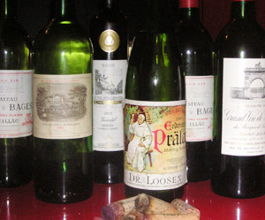
bring your bestDiverses Broccoli-Lauch-PasteteGemüse & Beilagen
Broccoli-Lauch-PasteteGemüse & Beilagen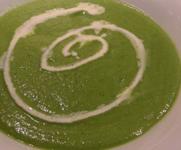
BroccolisuppeSuppe Brokkoli Anchovis SauceFisch & Meeresfrüchte
Brokkoli Anchovis SauceFisch & Meeresfrüchte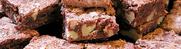
BrowniesDessert BrunchDiverses
BrunchDiverses BruschettaBrot & Pizza
BruschettaBrot & Pizza BurgersFleisch
BurgersFleisch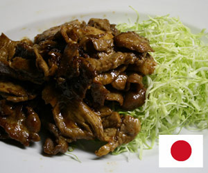
BUTA no SHOUGAYAKI (Schweinehals an Ingwersauce)Fleisch- BBUTA no SHOUGAYAKI (Schweinehals an Ingwersauce)Fleisch
 CalzoneBrot & Pizza
CalzoneBrot & Pizza- CalzoneBrot & Pizza
 Cannelloni mit LattichfüllungPasta & Risotto
Cannelloni mit LattichfüllungPasta & Risotto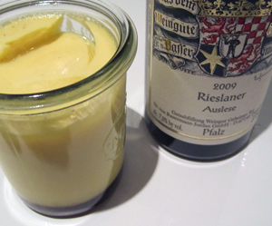
CaramelköpfliDessert- CCarbonaraPasta & Risotto
 Carciofi al fornoGemüse & Beilagen
Carciofi al fornoGemüse & Beilagen- CCarciofi al fornoGemüse & Beilagen
- CCarciofi al fornoGemüse & Beilagen
- CCarciofi al fornoGemüse & Beilagen
 Carciofi ritti "Aufrechte Artischocken"Gemüse & Beilagen
Carciofi ritti "Aufrechte Artischocken"Gemüse & Beilagen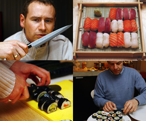
Carmens Sushi and Tempura a discretionFisch & Meeresfrüchte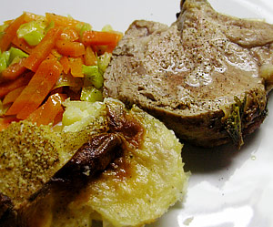
Carrée de veauFleisch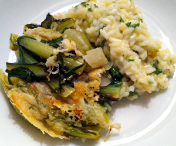
Catalogna CimeGemüse & Beilagen ChabisbünteliGemüse & Beilagen
ChabisbünteliGemüse & Beilagen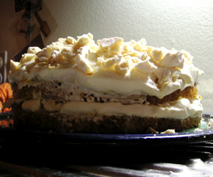
ChajaDessert- CChajaDessert
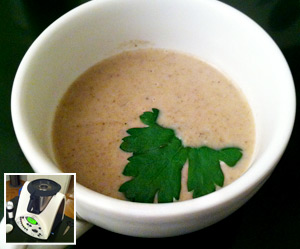
ChampignonrahmsuppeSuppe- CChevre chaudGemüse & Beilagen
 Chevre chaudGemüse & Beilagen
Chevre chaudGemüse & Beilagen Chicken PieGeflügel
Chicken PieGeflügel Chicoree & AvocadoDessert
Chicoree & AvocadoDessert Chicorée WäheDessert
Chicorée WäheDessert Chilli con CarneFleisch
Chilli con CarneFleisch ChnöpfliPasta & Risotto
ChnöpfliPasta & Risotto Chocolat Coconut PieDessert
Chocolat Coconut PieDessert- CCinque "P"Diverses
 Cipolle ripieneFleisch
Cipolle ripieneFleisch Club SandwichFleisch
Club SandwichFleisch Coq au RieslingGeflügel
Coq au RieslingGeflügel Coq au vin à la bourguignonneGeflügel
Coq au vin à la bourguignonneGeflügel Coquille Saint-Jacques (Jakobsmuschel) auf Nostranogurken-CarpaccioSalat
Coquille Saint-Jacques (Jakobsmuschel) auf Nostranogurken-CarpaccioSalat- Cordon Bleu im FährimaaFleisch
 Cote de BoeufFleisch
Cote de BoeufFleisch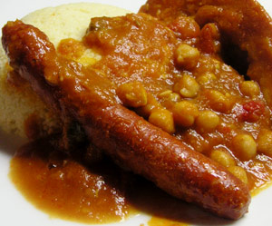
CouscousPasta & Risotto- CCouscous Grain (Semoule)Pasta & Risotto
 Couscous MediterraneanPasta & Risotto
Couscous MediterraneanPasta & Risotto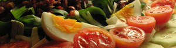
Craigs SalatSalat- CCrème brûléeDessert
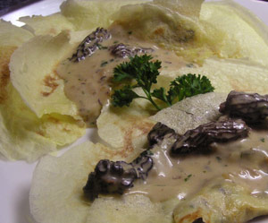
Crepes aux MorillesBrot & Pizza- CCrepes SuzetteDessert
 Crevettensalat in ParmesanschalenSalat
Crevettensalat in ParmesanschalenSalat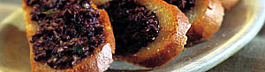
Crostini alla toscana (oliven-tapenade)Sauce & Dip- DDalGemüse & Beilagen
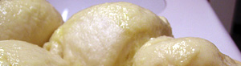
DampfnudelnPasta & Risotto DessertDessert
DessertDessert Dienst am VaterlandeDiverses
Dienst am VaterlandeDiverses Diverse Käse von Maître AntonyGemüse & Beilagen
Diverse Käse von Maître AntonyGemüse & Beilagen- DDörrbohnenGemüse & Beilagen
- DDörrbohnenGemüse & Beilagen
 Dörrtomaten-Salami-RisottoPasta & Risotto
Dörrtomaten-Salami-RisottoPasta & Risotto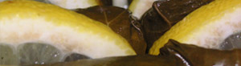
DolmadakiaGemüse & Beilagen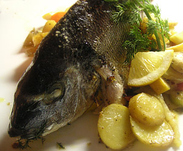
Dorade Royal (Goldbrasse)Fisch & Meeresfrüchte- DDorade Royal (Goldbrasse)Fisch & Meeresfrüchte
 Ebly SalatSalat
Ebly SalatSalat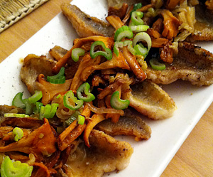
Eglifilet an EierschwämmeFisch & Meeresfrüchte Eierschwämme (Pfifferlinge) an selbstgemachten EiernudelnPasta & Risotto
Eierschwämme (Pfifferlinge) an selbstgemachten EiernudelnPasta & Risotto- EEingelegte DörrtomatenGemüse & Beilagen
 Elenas Fairy-CakesDessert
Elenas Fairy-CakesDessert Elsässer Spargel mit MorchelnGemüse & Beilagen
Elsässer Spargel mit MorchelnGemüse & Beilagen- EEmmentaler Kürbis-SchnitzelFleisch
 Emmentaler Kürbis-SchnitzelFleisch
Emmentaler Kürbis-SchnitzelFleisch- EEmmentaler Kürbis-SchnitzelFleisch
- EEndivesalat mit BaumnüssenSalat
 Endivie-Schinken-RollenFleisch
Endivie-Schinken-RollenFleisch- EEntenbrustGeflügel
 EntrecôteFleisch
EntrecôteFleisch Entrecote doubleFleisch
Entrecote doubleFleisch Entrecote double mit PfefferkrusteFleisch
Entrecote double mit PfefferkrusteFleisch Entrecôte in Gäbis neuer PfanneFleisch
Entrecôte in Gäbis neuer PfanneFleisch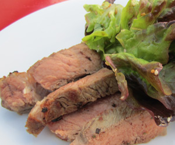
Entrecote und SalatSalat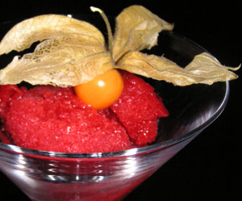
ErdbeersorbetDessert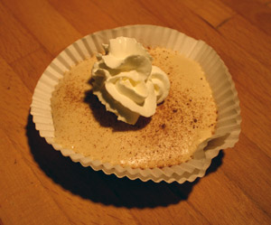
Espresso SemifreddoDessert EspressoglaceDessert
EspressoglaceDessert- Etwas Käse zum edlen TropfenGemüse & Beilagen
 Fagioli al fiascoGemüse & Beilagen
Fagioli al fiascoGemüse & Beilagen FajitasFleisch
FajitasFleisch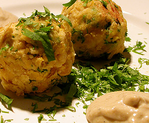
FalafelGemüse & Beilagen- Fasnacht 2005Diverses
- FFasoliaGemüse & Beilagen
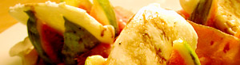
Feigen-RohschinkensalatSalat- FFenchelsalat mit ParmesanSalat
 Fenchelsalat mit ParmesanSalat
Fenchelsalat mit ParmesanSalat- Ferien mit dem RudelDiverses
- FFetataschenBrot & Pizza
 Filet im TeigFleisch
Filet im TeigFleisch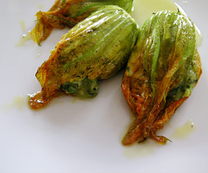
Fiori di zucchini ripieniGemüse & Beilagen Fisch in TomatensauceFisch & Meeresfrüchte
Fisch in TomatensauceFisch & Meeresfrüchte FischpastetchenFisch & Meeresfrüchte
FischpastetchenFisch & Meeresfrüchte FischspiessFisch & Meeresfrüchte
FischspiessFisch & Meeresfrüchte Fischsuppe aus einem einzigen FischSuppe
Fischsuppe aus einem einzigen FischSuppe- FFischsuppe aus einem einzigen FischSuppe
- FFlambiertes PouletgeschnetzeltesGeflügel
 FlammekuecheBrot & Pizza
FlammekuecheBrot & Pizza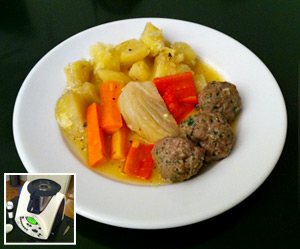
Fleischbällchen mit Herbstgemüse + Kartoffeln an CognacsauseFleisch- FFleischbällchen mit Herbstgemüse + Kartoffeln an CognacsauseFleisch
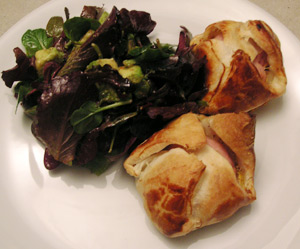
Fleischkäse-Krapfen mit SaisonsalatSalat Fleischkäse, Spiegelei und original 123-FritesFleisch
Fleischkäse, Spiegelei und original 123-FritesFleisch- FFlundernfilets nach Müllerinnen-ArtFleisch
- FFondueSauce & Dip
- FFondueSauce & Dip
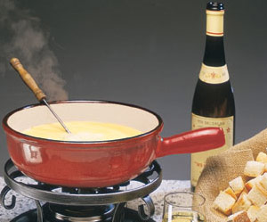
FondueSauce & Dip Fonduta in gebackener ZwiebelSauce & Dip
Fonduta in gebackener ZwiebelSauce & Dip Forelle auf einem LauchbettFisch & Meeresfrüchte
Forelle auf einem LauchbettFisch & Meeresfrüchte- Forelle im OfenFisch & Meeresfrüchte
- FFränzis OsterfladenBrot & Pizza
- FFränzis OsterfladenBrot & Pizza
 Fränzis OsterfladenBrot & Pizza
Fränzis OsterfladenBrot & Pizza- FFranzösische BratkartoffelnGemüse & Beilagen
 Fresh SpringrollsPasta & Risotto
Fresh SpringrollsPasta & Risotto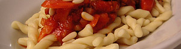
Fusilli con salsa di pomodoro, pancetta e pinoliPasta & Risotto Ganze Forelle mit Rohschinken-MeloneFisch & Meeresfrüchte
Ganze Forelle mit Rohschinken-MeloneFisch & Meeresfrüchte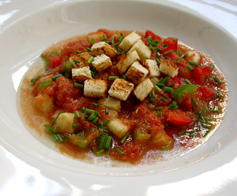
Gazpacho andaluz (kalte gemüse suppe)Suppe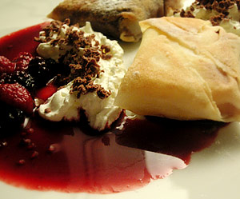
Gebratene eiskissenFleisch Gebratenes Hühnerfleisch mit Basilikum (Kai Phad Kaphrao)Geflügel
Gebratenes Hühnerfleisch mit Basilikum (Kai Phad Kaphrao)Geflügel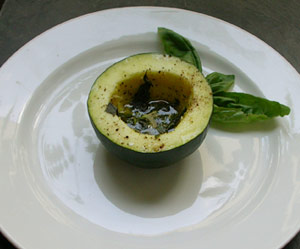
Gedämpfte rondiniGemüse & Beilagen- GGedämpfte zucchiniGemüse & Beilagen
- GGeflügelfondGeflügel
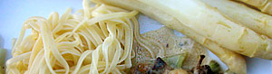
Gefüllte fenchelGemüse & Beilagen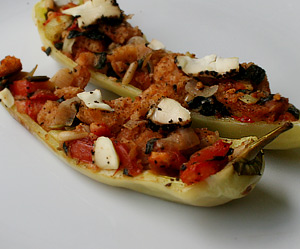
Gefüllte PeperoniGemüse & Beilagen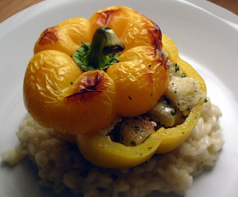
Gefüllte peperoni auf risottoPasta & Risotto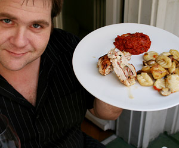
Gefüllte PouletbrustGeflügel Gefüllte RiesenchampignonsGemüse & Beilagen
Gefüllte RiesenchampignonsGemüse & Beilagen- GGefüllte RiesenchampignonsGemüse & Beilagen
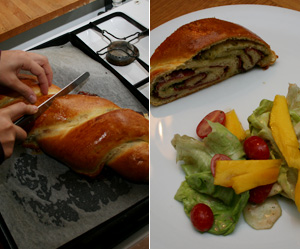
Gefüllter ZopfBrot & Pizza Gefülltes SpanferkelFleisch
Gefülltes SpanferkelFleisch Gegrillter Seeteufel auf SchmorbohnenFisch & Meeresfrüchte
Gegrillter Seeteufel auf SchmorbohnenFisch & Meeresfrüchte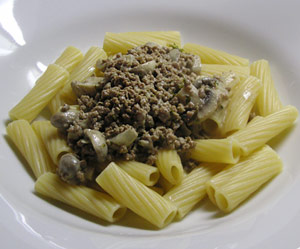
Gehacktes mit Champignon und RahmPasta & Risotto- GGeisskäse von monsieur anthonyGemüse & Beilagen
 Gekochter broccoliGemüse & Beilagen
Gekochter broccoliGemüse & Beilagen Gemüse/HackfleischwäheFleisch
Gemüse/HackfleischwäheFleisch Gemüse-Käse-SchnittenGemüse & Beilagen
Gemüse-Käse-SchnittenGemüse & Beilagen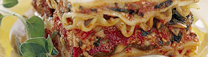
Gemüse LasagnePasta & Risotto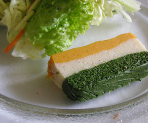
GemüseterrineGemüse & Beilagen Geräucherter Lachs (Mitbringsel aus Kopenhagen) auf einem KefenbettFisch & Meeresfrüchte
Geräucherter Lachs (Mitbringsel aus Kopenhagen) auf einem KefenbettFisch & Meeresfrüchte Gerollte heilbuttfiletsFisch & Meeresfrüchte
Gerollte heilbuttfiletsFisch & Meeresfrüchte Geschmorter Reis mit Hähnchen auf spanische ArtPasta & Risotto
Geschmorter Reis mit Hähnchen auf spanische ArtPasta & Risotto Geschnetzeltes kalb à la stroganoffFleisch
Geschnetzeltes kalb à la stroganoffFleisch- GGeschwellte kartoffelnGemüse & Beilagen
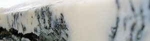
Geschwellte und diverser käse vom marktGemüse & Beilagen- GigotbratenFleisch
- GGnocchiPasta & Risotto
- Gnocchi di patatePasta & Risotto
 Gnocchi di patate mit parmesan-rahmsauce und weissen trüffelPasta & Risotto
Gnocchi di patate mit parmesan-rahmsauce und weissen trüffelPasta & Risotto- GrätimännerBrot & Pizza
- GGratin Dauphinoise nach Freddy GirardetGemüse & Beilagen
- GGratin Dauphinoise nach Freddy GirardetGemüse & Beilagen
- GGratin Dauphinoise nach Freddy GirardetGemüse & Beilagen
- GGratin Dauphinoise nach Freddy GirardetGemüse & Beilagen
- GGratin Dauphinoise nach Freddy GirardetGemüse & Beilagen
- Gratinierte bärlauch-morchel ravioliPasta & Risotto
 Gratinierte, gefüllte ZwiebelGemüse & Beilagen
Gratinierte, gefüllte ZwiebelGemüse & Beilagen Gratinierte RavioliPasta & Risotto
Gratinierte RavioliPasta & Risotto- Gratinierte StachysGemüse & Beilagen
- GGratinierter KrautstilGemüse & Beilagen
 Gratinierter Kürbis mit KalbsgeschnetzeltemFleisch
Gratinierter Kürbis mit KalbsgeschnetzeltemFleisch Gratinierter ZackenbarschGemüse & Beilagen
Gratinierter ZackenbarschGemüse & Beilagen Gravad Lax (Gebeizter Lachs, original "vergrabener" Lachs)Fisch & Meeresfrüchte
Gravad Lax (Gebeizter Lachs, original "vergrabener" Lachs)Fisch & Meeresfrüchte Greyerzer Egli-KnusperliFisch & Meeresfrüchte
Greyerzer Egli-KnusperliFisch & Meeresfrüchte- Grill und BeilagenFleisch
- GrillisFleisch
- GGrüne SpargelnGemüse & Beilagen
- Gschwellti und KäseGemüse & Beilagen
 GulaschFleisch
GulaschFleisch- Gulasch (Paprikás)Fleisch
 Gurken-Peperoni-Tomaten RagoutFleisch
Gurken-Peperoni-Tomaten RagoutFleisch Gurkenjoghurt-Salat nach JamieSalat
Gurkenjoghurt-Salat nach JamieSalat- HackfleischtaschenFleisch
 Hähnchenbrust in BlätterteigGeflügel
Hähnchenbrust in BlätterteigGeflügel- HauptgangFleisch
- HeidelbeerenwäheDessert
- Herbstsalat mit Trauben und BaumnüssenSalat
 Himbeer-Crispy-Whisky-TrifleDessert
Himbeer-Crispy-Whisky-TrifleDessert Hirschgeschnetzeltes an Apfel-Preiselbeer-SauceFleisch
Hirschgeschnetzeltes an Apfel-Preiselbeer-SauceFleisch HirschstroganoffFleisch
HirschstroganoffFleisch- Hühnerbrust gefüllt mit Blauschimmelkäse und WalnüssenGeflügel
 HumusSauce & Dip
HumusSauce & Dip Indisch angehauchter PouleteintopfSuppe
Indisch angehauchter PouleteintopfSuppe- IIngwer-KarottenGemüse & Beilagen
- IIngwer-KarottenGemüse & Beilagen
 Insalata di polpoSalat
Insalata di polpoSalat InvoltiniGeflügel
InvoltiniGeflügel- IItalienischer KartoffelstockGemüse & Beilagen
 Japanische OmelettenGemüse & Beilagen
Japanische OmelettenGemüse & Beilagen John's Hummer-TagliatellePasta & Risotto
John's Hummer-TagliatellePasta & Risotto- Joues de Porc en Civet, (Ormalinger Schweinebäckli)Fleisch
- JJoues de Porc en Civet, (Ormalinger Schweinebäckli)Fleisch
- JJoues de Porc en Civet, (Ormalinger Schweinebäckli)Fleisch
- Joues de Veau (Kalbsbacke) an Balsamico JusFleisch
- JJoues de Veau (Kalbsbacke) an Balsamico JusFleisch
 Jungspinat-Salat mit Champignons und AvocadoSalat
Jungspinat-Salat mit Champignons und AvocadoSalat- Jurasische LammhüftliFleisch
- JJurasische LammhüftliFleisch
 Jurassischer Lammrücken mit Sauce BernaiseFleisch
Jurassischer Lammrücken mit Sauce BernaiseFleisch KäsewäheGemüse & Beilagen
KäsewäheGemüse & Beilagen- KKafteriSauce & Dip
 Kalbsfilet an LimettensauceFleisch
Kalbsfilet an LimettensauceFleisch Kalbsfleisch mit Portweinrahmsauce mit getrockneten TomatenFleisch
Kalbsfleisch mit Portweinrahmsauce mit getrockneten TomatenFleisch Kalbsgeschnetzeltes an MorchelrahmsauceFleisch
Kalbsgeschnetzeltes an MorchelrahmsauceFleisch KalbskarreeFleisch
KalbskarreeFleisch Kalbskotelette mit BärlauchknöpfliPasta & Risotto
Kalbskotelette mit BärlauchknöpfliPasta & Risotto- Kalbsragout an ZitronensauceFleisch
- Kalbsroulade mit GänseleberfüllungFleisch
- KKalbsroulade mit GänseleberfüllungFleisch
- KalbsschnitzelFleisch
- Kalbsschnitzel an MarsalasauceFleisch
- Kalbsschnitzel mit Lauch und MorchelnFleisch
- KKalbssteakFleisch
 Kalte GurkensuppeSuppe
Kalte GurkensuppeSuppe KaninchenfiletFleisch
KaninchenfiletFleisch- Karamelisiertes RotkrautGemüse & Beilagen
- KKarottenGemüse & Beilagen
- KKarottenGemüse & Beilagen
- KKarottenGemüse & Beilagen
- KKarottenGemüse & Beilagen
 Karotten-SoufléGemüse & Beilagen
Karotten-SoufléGemüse & Beilagen- Karotten-Tomaten-PastaPasta & Risotto
 Kartoffel-Lauch-WäheBrot & Pizza
Kartoffel-Lauch-WäheBrot & Pizza- KKartoffel-Zucchini-PufferGemüse & Beilagen
- KKartoffelsalatSalat
 Kartoffelsalat ÖsterreicherartSalat
Kartoffelsalat ÖsterreicherartSalat- KKartoffelstockGemüse & Beilagen
- KKartoffelstockGemüse & Beilagen
- KKartoffelstockGemüse & Beilagen
- KKartoffelstockGemüse & Beilagen
- KKartoffelstockGemüse & Beilagen
- KKartoffelstockGemüse & Beilagen
- KKefenGemüse & Beilagen
 Kerbelwurzel-SuppeSuppe
Kerbelwurzel-SuppeSuppe KichererbsensalatSalat
KichererbsensalatSalat- Kinder ÜberraschungDiverses
 Klare KürbissuppeSuppe
Klare KürbissuppeSuppe- KKlare KürbissuppeSuppe
- Klassisches KäsesouffléGemüse & Beilagen
- Knöpfli oder SpätzliPasta & Risotto
- KKnöpfli oder SpätzliPasta & Risotto
- KKnöpfli oder SpätzliPasta & Risotto
- Korean Beef noodle saladSalat
- KKotopulo me PatatesGeflügel
- KräuterbutterSauce & Dip
 KrautstielpasteteGemüse & Beilagen
KrautstielpasteteGemüse & Beilagen KrazeteDiverses
KrazeteDiverses Kürbis a la HamiltonGemüse & Beilagen
Kürbis a la HamiltonGemüse & Beilagen- KKürbis ChutneySauce & Dip
- KKürbis sweet & sourGemüse & Beilagen
 Kürbiscrème (nach Oskar Marti)Gemüse & Beilagen
Kürbiscrème (nach Oskar Marti)Gemüse & Beilagen KürbiscrémesuppeSuppe
KürbiscrémesuppeSuppe KürbisravioliPasta & Risotto
KürbisravioliPasta & Risotto KürbisrisottoPasta & Risotto
KürbisrisottoPasta & Risotto- Kürbissuppe nach BocuseSuppe
- Kwitiaow raad naa (gebratne Nudeln mit Garnelen)Pasta & Risotto
 Laab GaiFleisch
Laab GaiFleisch Lachs MexicanFisch & Meeresfrüchte
Lachs MexicanFisch & Meeresfrüchte- Lachs-Zucchini-SchiffeFisch & Meeresfrüchte
 LachsterrineFisch & Meeresfrüchte
LachsterrineFisch & Meeresfrüchte Lammfilets auf RatatouilleFleisch
Lammfilets auf RatatouilleFleisch Lammfleisch PastetliFleisch
Lammfleisch PastetliFleisch Lammgigot-Steaks mit GurkenjoghurtFleisch
Lammgigot-Steaks mit GurkenjoghurtFleisch LammkoteletteFleisch
LammkoteletteFleisch Lammnierstück an OrangensauceFleisch
Lammnierstück an OrangensauceFleisch Lammracks an ThymianjusFleisch
Lammracks an ThymianjusFleisch- Lammrücken an rotem CurryFleisch
 Lammrücken mit TomatenbutterFleisch
Lammrücken mit TomatenbutterFleisch Lauch-PastaauflaufPasta & Risotto
Lauch-PastaauflaufPasta & Risotto- Lauwarmer roter Thunfisch mit Limonen-DillsauerrahmFisch & Meeresfrüchte
- LLauwarmer roter Thunfisch mit Limonen-DillsauerrahmFisch & Meeresfrüchte
- Le migliori polpette di tonnoFisch & Meeresfrüchte
 Lecker KressesüppchenSuppe
Lecker KressesüppchenSuppe- LLeimentaler Rindsfilet mit Tomaten-Pfifferlinggemüse, Rosmarinkartoffeln und KräuterbutterFleisch
 Linsen- Sellerie-Salat mit Minze und HaselnüssenSalat
Linsen- Sellerie-Salat mit Minze und HaselnüssenSalat LinsensalatSalat
LinsensalatSalat Maccheroni alla Chitarra al GorgonzolaPasta & Risotto
Maccheroni alla Chitarra al GorgonzolaPasta & Risotto Maiskugeln à la Facon HübeliGemüse & Beilagen
Maiskugeln à la Facon HübeliGemüse & Beilagen- MMaiskugeln à la Facon HübeliGemüse & Beilagen
- MMango GlacéDessert
 Mango TrifleDessert
Mango TrifleDessert Maronen PlauschDessert
Maronen PlauschDessert Maxi Beefy mit KäseFleisch
Maxi Beefy mit KäseFleisch- MayonnaiseSauce & Dip
- Meeresfrüchte-PastasalatSalat
- MMehlsuppeSuppe
- MMehlsuppeSuppe
- MelitzanesGemüse & Beilagen
- Meringueglace mit BalsamicoerdbeerenDessert
- MMeringueglace mit BalsamicoerdbeerenDessert
 Merlanfilets auf Safran-CouscousPasta & Risotto
Merlanfilets auf Safran-CouscousPasta & Risotto- Michis BologneseFleisch
 Michis NudelhopfPasta & Risotto
Michis NudelhopfPasta & Risotto MiesmuschelsuppeSuppe
MiesmuschelsuppeSuppe MinestroneSuppe
MinestroneSuppe- Moelleux au ChocolatDessert
 Moelleux au Noix de CocoDessert
Moelleux au Noix de CocoDessert- Mojito SorbetDessert
- MooncakeDessert
- Morot SalladGemüse & Beilagen
- MMousakkaFleisch
 Mousse au ChocolatDessert
Mousse au ChocolatDessert Mozzarella in CarrozzaGemüse & Beilagen
Mozzarella in CarrozzaGemüse & Beilagen NASU no MISOSHIRU (Miso Suppe mit Auberginen)Suppe
NASU no MISOSHIRU (Miso Suppe mit Auberginen)Suppe- Ochsenschwanz im RotweinFleisch
 Ocras, Minimais und FrühlingszwiebelnGemüse & Beilagen
Ocras, Minimais und FrühlingszwiebelnGemüse & Beilagen- OOcras, Minimais und FrühlingszwiebelnGemüse & Beilagen
- OOfen-Cherrytomaten mit schwarzen OlivenGemüse & Beilagen
 Okragemüse in würziger SenfsauceSauce & Dip
Okragemüse in würziger SenfsauceSauce & Dip Opfinger SpargelsalatSalat
Opfinger SpargelsalatSalat- OOpfinger SpargelsalatSalat
 Orangen-ZwiebelsalatSalat
Orangen-ZwiebelsalatSalat- OOrecchiette con cime di rapaPasta & Risotto
- Orecchiette con cime di rapaPasta & Risotto
- Orecchiette mit Champignons und SpeckPasta & Risotto
 Ormalinger Cote de Boeuf vom GallowayrindFleisch
Ormalinger Cote de Boeuf vom GallowayrindFleisch Ormalinger Schweinehalssteak von der FarnsburgFleisch
Ormalinger Schweinehalssteak von der FarnsburgFleisch Ormalinger Schweinscaree von der FarnsburgFleisch
Ormalinger Schweinscaree von der FarnsburgFleisch Osso BucoFleisch
Osso BucoFleisch- OOsso BucoFleisch
- Päts Obermumpfer-(nichtgammel)-RibeyeFleisch
 Pangasius an LimettensauceSauce & Dip
Pangasius an LimettensauceSauce & Dip- PPanna CottaDessert
- Panna CottaDessert
- Papardelle al Limone e RucolaPasta & Risotto
- Paprika-PouletGeflügel
- PParmesan-RahmsauceSauce & Dip
- Parmesan-Zucchini SalatSalat
- PParmiganaSauce & Dip
- PastaPasta & Risotto
 Pasta al SalsicciaPasta & Risotto
Pasta al SalsicciaPasta & Risotto- Pasta al sugo d'agnello e zafferanoPasta & Risotto
- PPasta al sugo d'agnello e zafferanoPasta & Risotto
- PPasta al sugo d'agnello e zafferanoPasta & Risotto
 Pasta all arrabiataPasta & Risotto
Pasta all arrabiataPasta & Risotto- PPasta alla Chitarra (nach Giovanna Fiorentina Ottaviani)Pasta & Risotto
- PPasta alla Chitarra (nach Giovanna Fiorentina Ottaviani)Pasta & Risotto
- PPasta alla Chitarra (nach Giovanna Fiorentina Ottaviani)Pasta & Risotto
- PPasta alla Chitarra (nach Giovanna Fiorentina Ottaviani)Pasta & Risotto
- PPasta alla Chitarra (nach Giovanna Fiorentina Ottaviani)Pasta & Risotto
- PPasta alla Chitarra (nach Giovanna Fiorentina Ottaviani)Pasta & Risotto
- Pasta (Bordone, danke Rafi) con Sugo di piselli, pancetta e ricottaPasta & Risotto
 Pasta Chitarra al FunghiPasta & Risotto
Pasta Chitarra al FunghiPasta & Risotto Pasta e FagioliPasta & Risotto
Pasta e FagioliPasta & Risotto Pasta mit LammgeschnetzeltemPasta & Risotto
Pasta mit LammgeschnetzeltemPasta & Risotto Pasta mit rohen Tomaten und RohschinkenPasta & Risotto
Pasta mit rohen Tomaten und RohschinkenPasta & Risotto PastaauflaufPasta & Risotto
PastaauflaufPasta & Risotto- PPastinaken RöstiGemüse & Beilagen
- PPastinakencremesuppeSuppe
 PavlovaDessert
PavlovaDessert- PPavlovaDessert
 Penne al SalsicciaPasta & Risotto
Penne al SalsicciaPasta & Risotto- PPenne alla PuttanescaPasta & Risotto
 Penne con Salsiccia piccante e MentaPasta & Risotto
Penne con Salsiccia piccante e MentaPasta & Risotto- PPenne con Salsiccia piccante e MentaPasta & Risotto
- PPeperoni dolci all'olioGemüse & Beilagen
 Persische ZucchiniGemüse & Beilagen
Persische ZucchiniGemüse & Beilagen Pesto im MörserSauce & Dip
Pesto im MörserSauce & Dip Petersilien-PestoSauce & Dip
Petersilien-PestoSauce & Dip- PPetersilienwurzelsuppeSuppe
- PPfefferrahmsauceSauce & Dip
 Phad ThaiFleisch
Phad ThaiFleisch Pho Ga (Vietnamesische Hühnersuppe)Suppe
Pho Ga (Vietnamesische Hühnersuppe)Suppe PicanhaFleisch
PicanhaFleisch Pikante MangosuppeSuppe
Pikante MangosuppeSuppe PilzsalatSalat
PilzsalatSalat- Pizza MilenaBrot & Pizza
- Pizza mit BüffelmozarellaBrot & Pizza
 Pizza mit Spinat und FetaBrot & Pizza
Pizza mit Spinat und FetaBrot & Pizza- Pochierte EierGemüse & Beilagen
 Pochierte Pouletbrust an BasilikumsauceGeflügel
Pochierte Pouletbrust an BasilikumsauceGeflügel- PPolentaGemüse & Beilagen
 Polentaschnitten an Fonduta und weissem TrüffelSauce & Dip
Polentaschnitten an Fonduta und weissem TrüffelSauce & Dip- PPolpettone (ital. Hackbraten)Fleisch
 Pomelos mit SchokoladengussDessert
Pomelos mit SchokoladengussDessert Pot-au-feuGemüse & Beilagen
Pot-au-feuGemüse & Beilagen Poulet au sel (nach Bocuse)Geflügel
Poulet au sel (nach Bocuse)Geflügel Poulet-ChinakohlGeflügel
Poulet-ChinakohlGeflügel Pouletbrust gefüllt mit Parmesan, Pinienkernen und BasilikumGeflügel
Pouletbrust gefüllt mit Parmesan, Pinienkernen und BasilikumGeflügel Pouletsalat mit StangensellerieSalat
Pouletsalat mit StangensellerieSalat POULETSCHENKEL MIT HONIG UND ZITRONEGeflügel
POULETSCHENKEL MIT HONIG UND ZITRONEGeflügel Quinoa-Kürbiseintopf aus den AndenSuppe
Quinoa-Kürbiseintopf aus den AndenSuppe- Quinoa-SalatSalat
 Quinto do crasto, 1998Getränke
Quinto do crasto, 1998Getränke RacletteGemüse & Beilagen
RacletteGemüse & Beilagen- Radicchio-RisottoPasta & Risotto
 Ragout della Nonna (nach Giovanna Fiorentina Ottaviani)Fleisch
Ragout della Nonna (nach Giovanna Fiorentina Ottaviani)Fleisch- RRagout della Nonna (nach Giovanna Fiorentina Ottaviani)Fleisch
- RRahmsauceSauce & Dip
- RRassige Pouletstreifen auf FrühlingssalatSalat
- Red CurryFleisch
- RRed CurryFleisch
 Redsnapper an KrachaiFleisch
Redsnapper an KrachaiFleisch- Rehfilet auf MischsalatSalat
- RRehgeschnetzeltes mit Pilze und RahmFleisch
 Reichlich garnierter FrühlingssalatSalat
Reichlich garnierter FrühlingssalatSalat Rhabarber-Apfel AuflaufDessert
Rhabarber-Apfel AuflaufDessert- Rhabarber-BelliniDessert
- RRhabarber TrifleDessert
- RRhabarberkuchenDessert
- RhabarberkuchenDessert
- RRhabarberkuchenDessert
 Ricotta Ravioli mit Speck-Rahm SaucePasta & Risotto
Ricotta Ravioli mit Speck-Rahm SaucePasta & Risotto- Rigatoni con Spinaci freschi al LimonePasta & Risotto
 Rindfleisch mit grünen Bohnen (Pad Phet Tua Fak Jao)Fleisch
Rindfleisch mit grünen Bohnen (Pad Phet Tua Fak Jao)Fleisch- RRindfleisch-TartarSalat
- RindsfiletFleisch
- RRindsfiletFleisch
 Rindsfilet an BrombeersauceFleisch
Rindsfilet an BrombeersauceFleisch Rindsfilet an RotweinsauceFleisch
Rindsfilet an RotweinsauceFleisch- Rindsfilet auf RotkohlrisottoPasta & Risotto
 Rindsfilet mit NiedergarmethodeFleisch
Rindsfilet mit NiedergarmethodeFleisch Rindsfilet SashimiFleisch
Rindsfilet SashimiFleisch- Rindsfilet StroganoffFleisch
 Rindsgeschnetzeltes an RahmsauceFleisch
Rindsgeschnetzeltes an RahmsauceFleisch Rindshuft an Dominiques CurryFleisch
Rindshuft an Dominiques CurryFleisch- RRindsragoutFleisch
- Rindsschmorbraten mit Essig und Rahm (Manzo alla California)Fleisch
 RippliFleisch
RippliFleisch- RisottoPasta & Risotto
- RRisottoPasta & Risotto
- RRisottoPasta & Risotto
- RRisottoPasta & Risotto
- RRisottoPasta & Risotto
- RRisottoPasta & Risotto
- RRisottoPasta & Risotto
- RRisottoPasta & Risotto
- RRisottoPasta & Risotto
- RRisotto an TrüffeloelPasta & Risotto
- Risotto con Tarufi NeroPasta & Risotto
 Risotto con Zucca e Gorgonzola (Kürbisrisotto mit Gorgonzola)Pasta & Risotto
Risotto con Zucca e Gorgonzola (Kürbisrisotto mit Gorgonzola)Pasta & Risotto Risotto con Zucca e Vino Rosso (nach Elia Rizzo vom il Desco (VR))Pasta & Risotto
Risotto con Zucca e Vino Rosso (nach Elia Rizzo vom il Desco (VR))Pasta & Risotto Risotto Frutti di MarePasta & Risotto
Risotto Frutti di MarePasta & Risotto- RRisotto Frutti di MarePasta & Risotto
- Risotto mit schwarzen TrüffelPasta & Risotto
- Riz CasimirFleisch
- RRiz Rouge (roter Reis de l'Etang de Marseillette)Pasta & Risotto
- RRoastbeefFleisch
- RRoastbeefFleisch
- RoastbeefFleisch
- RRöselikohlGemüse & Beilagen
- RRöselikohlblätterGemüse & Beilagen
- RRösti aus rohen KartoffelnGemüse & Beilagen
- RRösti (original)Gemüse & Beilagen
- RRösti (original)Gemüse & Beilagen
- RRösti (original)Gemüse & Beilagen
 Rohschinken-Geisenkäsepäckli auf SalatbouquetSalat
Rohschinken-Geisenkäsepäckli auf SalatbouquetSalat- RRomanescoGemüse & Beilagen
- Roquefort-Polenta mit Saucisson und EndivieGemüse & Beilagen
 RosenwassereisDessert
RosenwassereisDessert Roter ThaicurryFleisch
Roter ThaicurryFleisch- RRoter ThaicurryFleisch
 Rotes Lammcurry Kaschmir-ArtFleisch
Rotes Lammcurry Kaschmir-ArtFleisch- RRotkrautGemüse & Beilagen
 RotzungenfiletsFleisch
RotzungenfiletsFleisch- Ruccola auf Bresaola della Valtellina und ZucchiniFleisch
- Safran-Tagliatelle mit RiesenscampiPasta & Risotto
 SafranrisottoPasta & Risotto
SafranrisottoPasta & Risotto- SSafranrisottoPasta & Risotto
- Salat mit Champignons und SpeckSalat
 Salat mit knusper Basilikum und Chicken-NuggetsSalat
Salat mit knusper Basilikum und Chicken-NuggetsSalat- SSalsa di Pomodoro con Burro e CipollaSauce & Dip
- SSaltimboccaFleisch
- SSalzkartoffelnGemüse & Beilagen
- SSalzkartoffelnGemüse & Beilagen
- SSauce BernaiseSauce & Dip
- Sauce BernaiseSauce & Dip
- SSauce BernaiseSauce & Dip
 Saucisson Vaudois im MantelGemüse & Beilagen
Saucisson Vaudois im MantelGemüse & Beilagen Sauerkraut und WildwürsteFleisch
Sauerkraut und WildwürsteFleisch SauerkrautstrudelBrot & Pizza
SauerkrautstrudelBrot & Pizza Scaloppine al limoneFleisch
Scaloppine al limoneFleisch- ScampiFisch & Meeresfrüchte
 Schinken im TeigFleisch
Schinken im TeigFleisch- SSchinken im TeigFleisch
- Schnittlauch-RahmsauceSauce & Dip
- SSchnittlauchsauceSauce & Dip
- SSchoggikuchenDessert
 SchoggimousseDessert
SchoggimousseDessert SchokoladenmousseDessert
SchokoladenmousseDessert- SSchokoladentorte (nach Elia Rizzo vom il Desco (VR))Dessert
 Schokopudding mit ganzer OrangeDessert
Schokopudding mit ganzer OrangeDessert- SchwarzwälderkirschtorteDessert
 SchweinebratenFleisch
SchweinebratenFleisch Schweinekoteletts mit SalbeiFleisch
Schweinekoteletts mit SalbeiFleisch Schweinerippli auf gebratenem KabisFleisch
Schweinerippli auf gebratenem KabisFleisch Schweinragout mit Dörrtomaten und SteinpilzenFleisch
Schweinragout mit Dörrtomaten und SteinpilzenFleisch SchweinsfiletFleisch
SchweinsfiletFleisch Schweinsfilet an Senfkruste mit Barlotti-BohnenFleisch
Schweinsfilet an Senfkruste mit Barlotti-BohnenFleisch Schweinsfilet an zarter SenfsauceFleisch
Schweinsfilet an zarter SenfsauceFleisch- Schweinsleber mit grünem Pfeffer auf einem SalatbouquetSalat
- Schweinsmedaillion an PfifferlingeFleisch
 Seehecht mit KnuspermantelFisch & Meeresfrüchte
Seehecht mit KnuspermantelFisch & Meeresfrüchte- Seeteufel mit Pastinakenpüree auf Ananas-CarpaccioSalat
 Selbstgemachter Basilikum-MozarellaGemüse & Beilagen
Selbstgemachter Basilikum-MozarellaGemüse & Beilagen Sellerie/Karotten-GemüseGemüse & Beilagen
Sellerie/Karotten-GemüseGemüse & Beilagen Sellerie RavioliPasta & Risotto
Sellerie RavioliPasta & Risotto SelleriesuppeSuppe
SelleriesuppeSuppe- SemifreddoDessert
- SenfkartoffelnGemüse & Beilagen
- SSenfkartoffelnGemüse & Beilagen
- SSenfkartoffelnGemüse & Beilagen
- SSenfsauceSauce & Dip
 Sogliola alla fiorentina (Seezunge mit Spinat)Fisch & Meeresfrüchte
Sogliola alla fiorentina (Seezunge mit Spinat)Fisch & Meeresfrüchte Som Tam Thai (scharfer Papayasalat)Salat
Som Tam Thai (scharfer Papayasalat)Salat- SSom Tam Thai (scharfer Papayasalat)Salat
- Spaghetti aglio e olioPasta & Risotto
 Spaghetti alla chitarra con cime di rapaPasta & Risotto
Spaghetti alla chitarra con cime di rapaPasta & Risotto Spaghetti an Steinpilz-TomatensaucePasta & Risotto
Spaghetti an Steinpilz-TomatensaucePasta & Risotto- SSpaghetti mit Mönchsbart (barba di frate)Pasta & Risotto
- Spaghetti mit Mönchsbart (barba di frate)Pasta & Risotto
 Spaghetti VongolePasta & Risotto
Spaghetti VongolePasta & Risotto- Spaghettini alla chitarra con tartufi neroPasta & Risotto
 Spaniens GrössterDiverses
Spaniens GrössterDiverses Spargel-consomméSuppe
Spargel-consomméSuppe- Spargel-Consommé mit RotzungenfiletsSuppe
 Spargel en papillote (nach Felix Thomann)Gemüse & Beilagen
Spargel en papillote (nach Felix Thomann)Gemüse & Beilagen SpargelcremesuppeSuppe
SpargelcremesuppeSuppe- SSpargelcremesuppeSuppe
- SSpargelravioliPasta & Risotto
- SSpargelravioliPasta & Risotto
 SpargelsalatSalat
SpargelsalatSalat- Spargelsalat mit Radieschen und HaselnussSalat
- SSpinatGemüse & Beilagen
- SSpinatGemüse & Beilagen
- SSpinatGemüse & Beilagen
 SpinatlasagnePasta & Risotto
SpinatlasagnePasta & Risotto SpinatrisottoPasta & Risotto
SpinatrisottoPasta & Risotto StangenweissbrotBrot & Pizza
StangenweissbrotBrot & Pizza Strangolapreti (Spinat-Kartoffelknödel)Gemüse & Beilagen
Strangolapreti (Spinat-Kartoffelknödel)Gemüse & Beilagen- Straussenfilet an SenfsauceFleisch
 Straussensteak, Tomaten im Ofen dazu junge BratkartoffelnFleisch
Straussensteak, Tomaten im Ofen dazu junge BratkartoffelnFleisch- Stufato di manzo al vino rossoFleisch
 Süsskartoffeln mit SalatSalat
Süsskartoffeln mit SalatSalat- SuflakiFleisch
- SSuflakiFleisch
- SSzegediner GulaschFleisch
- Szegediner GulaschFleisch
 T-Bone SteakFleisch
T-Bone SteakFleisch TabboulehFleisch
TabboulehFleisch- Tabouleh mit MerguezFleisch
- TafelspitzFleisch
- Tagiatelle con SalcicePasta & Risotto
- Tagliata di manzo con rucola e granaFleisch
 Tagliatelle ai funghi porciniPasta & Risotto
Tagliatelle ai funghi porciniPasta & Risotto Tagliatelle PorciniPasta & Risotto
Tagliatelle PorciniPasta & Risotto Tailändischer Glasnudelsalat mit CrevettenSalat
Tailändischer Glasnudelsalat mit CrevettenSalat- Tajarin al ragu di coniglioFleisch
- TTarte TatinDessert
- TTarte Tatin au poiresDessert
 Thai Beef SaladSalat
Thai Beef SaladSalat Thai GemüseGemüse & Beilagen
Thai GemüseGemüse & Beilagen- TThai OmeletteGemüse & Beilagen
- TThai OmeletteGemüse & Beilagen
- TThai OmeletteGemüse & Beilagen
- TThai OmeletteGemüse & Beilagen
- Thai-Spinat (phak bung fai-daeng)Gemüse & Beilagen
- Thailändische Kürbissuppe mit Kokosmilch (Gaeng liang fak Thong)Suppe
 Thunfisch auf LauchgemüseFisch & Meeresfrüchte
Thunfisch auf LauchgemüseFisch & Meeresfrüchte- TTobiampurchipsGemüse & Beilagen
- TOFU no SALAD GOMA DRESSING (Tofu Salat mit Sesam Dressing)Salat
- TTOFU no SALAD GOMA DRESSING (Tofu Salat mit Sesam Dressing)Salat
 Tofu-Schrimps-Salat nach Rest. ChanthaburiSalat
Tofu-Schrimps-Salat nach Rest. ChanthaburiSalat Tom khaa tofuGemüse & Beilagen
Tom khaa tofuGemüse & Beilagen- TTom khaa tofuGemüse & Beilagen
- Tomaten-Kürbis-SuppeSuppe
 Tomatensauce mit Auberginen, Ruccola und RiccotaSauce & Dip
Tomatensauce mit Auberginen, Ruccola und RiccotaSauce & Dip- TTopinambursuppeSuppe
- TORI no WASABI SAUSE AE (Pouletsalat an Wasabi-Mayo Dressing)Salat
- TTORI no WASABI SAUSE AE (Pouletsalat an Wasabi-Mayo Dressing)Salat
- Tortellini con stuzi cadentiPasta & Risotto
 Tortelloni "Ricotta e spinaci"Pasta & Risotto
Tortelloni "Ricotta e spinaci"Pasta & Risotto- TTortilla de PatatasGemüse & Beilagen
- Tre ColoriGemüse & Beilagen
- TumbetGemüse & Beilagen
- Turkey vs ItalyBrot & Pizza
 Überbackene OmelettenGemüse & Beilagen
Überbackene OmelettenGemüse & Beilagen- Überbackener FenchelGemüse & Beilagen
 Überbackener SpaghettikürbisPasta & Risotto
Überbackener SpaghettikürbisPasta & Risotto Vacherin Mont d'OrGemüse & Beilagen
Vacherin Mont d'OrGemüse & Beilagen- VVanillesauceSauce & Dip
 Vegetarian Tunisian CouscousPasta & Risotto
Vegetarian Tunisian CouscousPasta & Risotto Vegetarisch gefüllte Tomate auf GoldhirsenringGemüse & Beilagen
Vegetarisch gefüllte Tomate auf GoldhirsenringGemüse & Beilagen Vegetarische GulaschFleisch
Vegetarische GulaschFleisch- VVegetarische WantanPasta & Risotto
- Vegetarisches zuercher GeschnetzeltesFleisch
 Vegi-NuggetsGemüse & Beilagen
Vegi-NuggetsGemüse & Beilagen- Vicky's Cheese CakeDessert
 Viel WeinGetränke
Viel WeinGetränke Vitello farcito (gefüllte Kalbsbrust)Fleisch
Vitello farcito (gefüllte Kalbsbrust)Fleisch Vitello TonnatoFisch & Meeresfrüchte
Vitello TonnatoFisch & Meeresfrüchte Vitlöks Marinerader SardinerFisch & Meeresfrüchte
Vitlöks Marinerader SardinerFisch & Meeresfrüchte- VorspeiseGemüse & Beilagen
- VürsùDiverses
 Waadtländer Lauch-Kartoffel-Gemüse mit SaucissonGemüse & Beilagen
Waadtländer Lauch-Kartoffel-Gemüse mit SaucissonGemüse & Beilagen Wägitaler RegenbogenforelleFisch & Meeresfrüchte
Wägitaler RegenbogenforelleFisch & Meeresfrüchte- WWaldmeister-Bowle bzw. SiroupGetränke
- Wiener SchnitzelFleisch
- WWiener SchnitzelFleisch
- Wienerli im TeigFleisch
- Wildschwein-BologneseFleisch
- Wildschwein EntrecoteFleisch
- Willis LachsFisch & Meeresfrüchte
 Wurst-KäsesalatSalat
Wurst-KäsesalatSalat- YYuxiangrousi (Schweinefleisch mit Peperoni und Bambus)Fleisch
- ZZabaioneDessert
- ZZaizikiGemüse & Beilagen
- ZZaizikiGemüse & Beilagen
 Zander auf ErdbeerrisottoPasta & Risotto
Zander auf ErdbeerrisottoPasta & Risotto Zanderfilet und NüsslisalatSalat
Zanderfilet und NüsslisalatSalat- ZZha-qiehe (gefüllte gebratene Aubergine)Fleisch
 Zitronenrisotto mit CrevettenPasta & Risotto
Zitronenrisotto mit CrevettenPasta & Risotto- ZZitronenrisotto mit CrevettenPasta & Risotto
- ZZitronenrisotto mit CrevettenPasta & Risotto
 Zucchini ParmigianaGemüse & Beilagen
Zucchini ParmigianaGemüse & Beilagen Zuccini-SchiffchenGemüse & Beilagen
Zuccini-SchiffchenGemüse & Beilagen ZuccottoDessert
ZuccottoDessert Zürcher GeschnetzeltesFleisch
Zürcher GeschnetzeltesFleisch Züri-Geschnetzeltes mit badischem SpargelFleisch
Züri-Geschnetzeltes mit badischem SpargelFleisch Zuppa di Ribollita (Minestrone)Suppe
Zuppa di Ribollita (Minestrone)Suppe- Zuppa FantasiaGemüse & Beilagen
 ZwiebelgemüseGemüse & Beilagen
ZwiebelgemüseGemüse & Beilagen Zwiebelrostbraten vom Roastbeef mit RöstzwiebelnFleisch
Zwiebelrostbraten vom Roastbeef mit RöstzwiebelnFleisch- ZZwiebelwäheGemüse & Beilagen